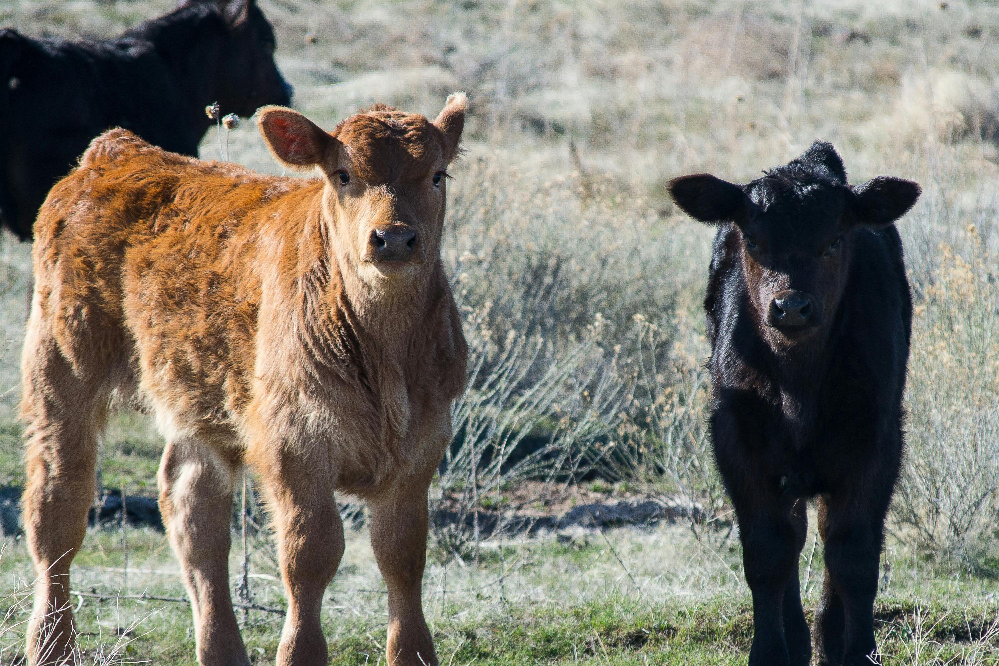

Don't let Lumpy Skin Disease disrupt your herd. Discover proven remedies and preventative measures
to protect your cattle's well-being.

Preventive Measures
Vaccination
Importance:
Vaccination is one of the most effective ways to prevent Lumpy Skin Disease (LSD) in cattle.
Availability: Discuss the availability of LSD vaccines in your region.
Vaccination Schedules:
Provide information on recommended vaccination schedules and booster shots.
Biosecurity
Strict Hygiene:
Emphasize the importance of maintaining strict hygiene practices in and around the farm.
Quarantine: Discuss the need to quarantine new animals and isolate those with suspected LSD.
Vector Control: Explain how to control insect vectors, such as mosquitoes and ticks, which can
transmit the disease.
Vector Control
Insect Repellents: Recommend the use of insect repellents on cattle.
Environmental Management: Discuss ways to modify the environment to reduce insect breeding sites.
Regular Inspections: Emphasize the importance of regular inspections for signs of insect
infestation. transmit the disease.
Isolation of Infected Animals
Prompt Isolation: Explain the importance of promptly isolating animals with suspected LSD to prevent
disease spread.
Quarantine Facilities: Discuss the requirements for quarantine facilities and the necessary
equipment.
Monitoring: Highlight the need for regular monitoring of quarantined animals for signs of recovery
or worsening symptoms.
Treatment of disease
Symptomatic Treatment
Fever: Discuss methods to manage fever, such as providing cool water and shade.
Skin Lesions: Explain how to care for skin lesions, including cleaning and applying antiseptic
ointments.
Respiratory Problems: Address respiratory symptoms, such as coughing or difficulty
breathing, and recommend appropriate treatments.
Supportive Care
Strict Nutrition: Emphasize the importance of providing a nutritious diet to support the immune
system and aid in recovery.
Hydration: Discuss the need for adequate hydration, especially during hot weather or when animals
are experiencing fever.
Clean Environment: Highlight the importance of maintaining a clean and sanitary environment to
prevent secondary infections.
Antibiotics
Secondary Infections: Explain when antibiotics may be necessary to treat secondary bacterial
infections that can develop in animals with Lumpy Skin Disease.
Veterinary Consultation: Emphasize the importance of consulting with a veterinarian to determine if
antibiotics are appropriate and to select the most effective medication.
Experimental Therapies
Ongoing Research: Briefly mention any ongoing research or experimental treatments for Lumpy Skin
Disease.
Veterinary Guidance: Advise users to consult with a veterinarian for information on experimental
therapies and their potential benefits and risks.